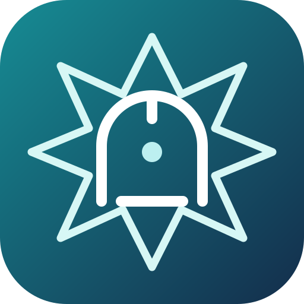

زاد المؤمن
زاد يومك… نور دربكأهلاً بك في زاد المؤمن
رفيقك اليومي للقرآن والذكر والدعاء والعبادة، بواجهة هادئة ومحتوى قابل للحفظ للقراءة دون اتصال.
أقسام زاد المؤمن
اختر القسمالقرآن الكريم
القرآن الكريم من مكتبة حقيبة المؤمن. افتح السورة أو المصحف الكامل داخل التطبيق.
القرآن الكريم
اختر سورة من الفهرس.
مكتبة الأدعية
تصنيف منظم للأدعية وتعقيبات الصلاة والمناجاة وأدعية الأيام.
مكتبة الزيارات
تصنيف مستقل للزيارات العامة والزيارات المخصوصة.
الأذكار والأعمال اليومية
التسبيحات والصلوات اليومية من حقيبة المؤمن.
المسبحة الإلكترونية
سُبْحَانَ اللهِ وَالْحَمْدُ لِلَّهِ
مواقيت الصلاة – الحساب الجعفري
حساب فلكي محلي استرشادي بالطريقة الجعفرية (زاوية فجر 16°، مغرب 4°، عشاء 14°). قد تختلف الدقائق عن تقويم مكتب المرجع وثبوت الوقت؛ لا تعتمد عليه وحده للعبادات الواجبة.
اتجاه القبلة
فعّل الموقع واتجاه الهاتف، ثم وجّه أعلى الهاتف نحو السهم.
اضغط تحديد القبلة للبدء.
بانتظار إذن الموقع ومستشعر الاتجاه.
تحتاج البوصلة إلى HTTPS وإذن الموقع ومستشعر مغناطيسي في الهاتف. أبعد الهاتف عن المعادن ومكبرات الصوت وعاير الجهاز بحركة رقم 8 إذا لزم.
التقويم الهجري والمناسبات
المناسبات المشهورة
القراء والتلاوات
يمكن تشغيل تلاوة السورة عند الاتصال. حفظ الصوتيات للاستماع دون إنترنت يعتمد على إتاحة التنزيل وحقوق كل تسجيل.
اختر السورة، وسيظهر مشغل القراءة من حقيبة المؤمن داخل التطبيق.
الإعدادات
مكتبة الأدعية والزيارات
تنزيل النصوص المتاحة ذات العنوان المطابق وحفظها على هذا الجهاز للقراءة دون اتصال.
لم يبدأ تنزيل المكتبة بعد.
يُحفظ العداد والمفضلة والسور والنصوص التي تم تنزيلها على الجهاز نفسه. عند مسح بيانات المتصفح قد تفقد النسخ المحلية.
هذه نسخة تطوير غير نهائية؛ النصوص الدينية الكاملة تحتاج مطابقة تحريرية ومصدرية قبل النشر. يحتاج نشر HTTPS حتى يعمل التثبيت وService Worker، كما تحتاج مكتبة الأدعية والزيارات مراجعة نصية موثقة قبل اعتباره إصداراً دينياً نهائياً.